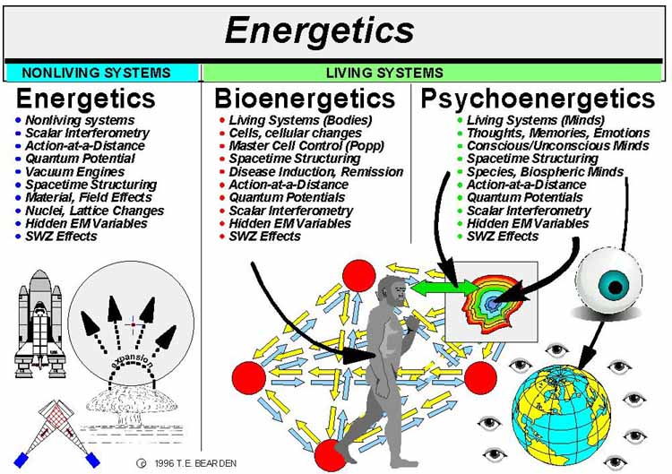

|
With no mind measurements possible and
no instruments, it is understandable that Western science considers only
the physical side of the mind-matter interface. Brute Forcing Time Ironically,
Western mind control researchers using transverse EM waves for mind
control research, are using a brute force method of evoking and using
vacuum engines ( spacetime curvature engines) and a special form of
general relativity, although they do not appear to realize it. |
They also do not hesitate to use LWs
and t-polarized waves overtly. So in blunt terms, Western compared
to Russian mind control research is probably like comparing an
automobile body shop with a fine surgical ward. Having long ago
worked out all those "exact correlates" to the internal
"information content of the field" is where the KGB scientists
are at least 20 years ahead of the West. Polarization and Observability As we stated, there are four photon polarizations and therefore there must be correspondingly four EM wave polarizations1 The first three polarizations are the x-, y-, and z- spatial polarizations. The x- and y- polarizations are transverse polarizations and the z-polarization is a longitudinal polarization along the direction of propagation (along the z-axis, by standard notation). Simply put, we may visualize the transverse polarizations as rather like the wiggling of a fish's tail from side to side as the fish moves forward, or a whale's flukes up and down as the whale moves forward, or some combination thereof. We may visualize the longitudinal polarization as a sort of "repetitive accordion effect" along the line of motion of the wave. Usually the z- polarization is neglected in EM wave theory, although in recent years physicists have "rediscovered" longitudinal EM waves and are now intensely researching the use and characteristics of such waves.12 |

Figure 6. The three divisions of Soviet energetics and their characteristics.